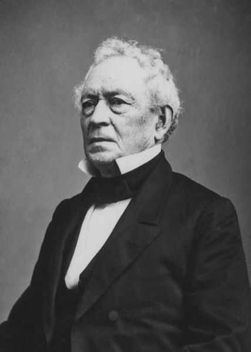

|
The Gettysburg Address is, of course, Abraham Lincoln's most
famous speech. The speech, on November 19, 1863, had its
origins in a sanitary problem on the Gettysburg battlefield.
The shallow graves were in danger of being uncovered by
|

Harvard President Edward Everett, one of the most noted
public speakers of his time, was among the first people to appreciate the
Gettysburg Address for the masterpiece that it was.
|
autumn rains, and several states thought their fallen heroes
deserved a more suitable burial. At the instigation of
Gettysburg citizen David Wills, the Commonwealth of
Pennsylvania bought seventeen acres of the battlefield and
had a cemetery designed. Wills planned a ceremony for
November to dedicate the grounds.
Edward Everett, the former president of Harvard and a
famed orator, was to be the featured speaker. Wills invited
President Lincoln as an afterthought on November 2, well
over a month after he had invited Everett. Lincoln accepted
with probably less than 2 weeks left in which to compose his
address.
The President took a train to Gettysburg the night before
the ceremony. It is almost certain that he did not write the
speech on the back of an envelope on the train ride. The
first page of the earliest existing draft is written neatly
in ink on ruled White House stationery. The address appears
on no envelope or scrap of paper, and a I hour 10 minute
jolting railroad trip provided no opportunity for the neat
hand or the careful eloquence. Lincoln did apparently
finish writing the address at Wills's house.
After a long procession on Thursday morning, the 19th,
Lincoln waited for Everett, who was 1/2 hour late, and then
sat through the old orator's courtly 2-hour long speech.
Lincoln's own address lasted about 2 minutes and was over
before many of the 15,000 people present realized that he
had begun to speak. Nevertheless, it was recognized
immediately by men of letters as a masterpiece. Everett
himself wrote Lincoln the next day: "I should be glad, if
I could flatter myself that I came as near the central idea
of the occasion, in two hours, as you did in two minutes."
Henry Wadsworth Longfellow told the editor of Harper's
Weekly on the same day that he found the address
"admirable." Harper's called the address as "simple and
felicitous and earnest a word as was ever spoken," and in
sharp contrast to Everett's "smooth and cold" speech. Josiah
Gilbert Holland of the Springfield, Massachusetts,
Republican called the speech "a perfect gem" and said that
"the rhetorical honors of the occasion were won by President
Lincoln." In less than 2 years Ralph Waldo Emerson would say
that Lincoln's "brief speech at Gettysburg will not easily
be surpassed by words on any recorded occasion." Lincoln
himself seems to have thought his Second Inaugural Address
his best speech, and indeed the popular fame of the
Gettysburg Address came after his death. Some 35
lithographed and engraved copies of the Emancipation

Abraham Lincoln at Gettysburg, as he stood to read his speech
|
Proclamation were printed before 1866, but one searches in
vain for any similar decorative editions of the Gettysburg
Address published in Lincoln's lifetime.
The address has been variously interpreted, but its
meaning seems clear enough within the context of Lincoln's
political thought. Lincoln dated the founding of the
country "Four score and seven years" before 1863- that is,
in 1776. He always thought the Declaration of Independence
of 1776 the fundamental document of the nation's history and
saw all American history as an attempt to live up to the
promise embodied in its statement that all men are created
equal. The Gettysburg Address stated simply that the reason
for the deaths on the battlefield was the preservation of
the nation dedicated to that proposition. The ceremonies,
Lincoln said, could add no luster to that sacrifice but
should lead Americans to dedicate themselves to finishing
the work those heroes began.
Though there are controversies over the circumstances of
the composition of the address, over the speed with which
its worth was recognized, and over the exact meaning of the
address, there is no controversy over its standing as one of
the grandest examples of American letters. The existing
handwritten copies of the address are regarded as national
treasures. Two copies are in the Library of Congress; one
is in the Lincoln Room of the White House; one is in the
Cornell University Library; and one is in the Illinois State
Historical Library.
Source: Mark Neely, Jr., ed., The Abraham Lincoln Encyclopedia (New York:
McGraw-Hill, 1982), 124-125.
|